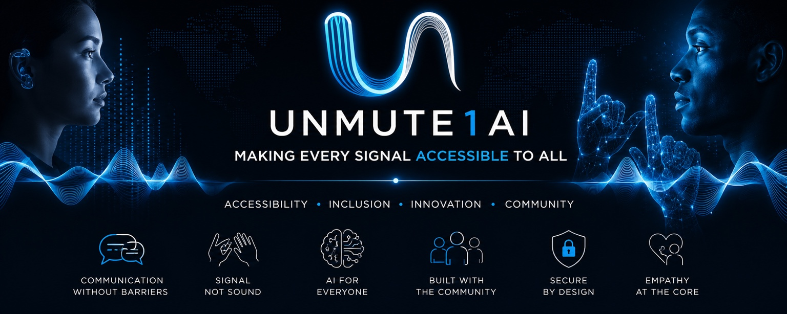

WELCOME HOME
Your space. Your signal.
A calmer desktop. Built around the way you work.

Made for you
Set the screen, sound, and controls to suit you.
Your workspace
Files and tools, one step away.
Visual preview. Controls here do not change your computer.
Ubuntu 24.04 LTS · Desktop foundation 0.1 · AI runtimes not included.
The native GTK application uses this visual direction; system window controls and dock rendering vary by Ubuntu session.
The native GTK application uses this visual direction; system window controls and dock rendering vary by Ubuntu session.